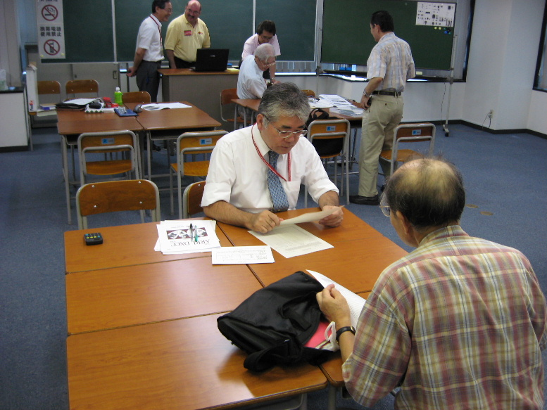

このページのReportの読み方
The next solar minimum will likely occur sometime between
December 2006 and March 2008
with cycle 24 peaking in 2011.
HAM Fair 2007
[Back Issues Aug.2007]
TIME:UTC(JST-09:00)
Report from JA1RJU (PM95sq)
31.Aug.2007(15:00b)
*BY-TV 03:30- 49.750 --
30.Aug.2007(15:00d)
DU7/PA0HIP 03:35 50.110 CW CQing
DU7/PA0HIP 06:53 50.110 CW CQing
DU7/PA0HIP 07:29 50.110 CW CQing strong!
DU7/PA0HIP 09:19 50.110 CW CQing
29.Aug.2007(15:00b)
28.Aug.2007(15:00b)
*BY-TV 00:30- 49.750 --
*9M-TV 00:30- 48.240/260 --
27.Aug.2007(15:00d)
*BY-TV 00:30- 49.750 --
*9M-TV 02:20- 48.260 --
*9M-TV 05:00- 48.240 --
BV2NT/B 06:20- 50.001 CW Beacon
9M4SIX/B 06:25- 50.005 CW Beacon
9M4SIX/B 06:55- 50.005 CW Beacon still good!
25-26.Aug.2007(00:00a)
◎今週末の(PM95sq)からのDXリポートは休止します(ハムフェア2007)。
24.Aug.2007(15:00d)
*BY-TV 00:30- 49.750 --
*9M-TV 00:30- 48.240/260 --
DS1PDF 00:56 50.110 SSB CQing
BA5DX/QRP 02:43 50.110 CW CQ...CQ...
BV2NT/B 06:00- 50.001 CW Beacon
23.Aug.2007(15:00d)
*BY-TV 07:00- 49.750 --
*9M-TV 07:50- 48.240 --
DS5KJR 08:14 50.110 CW
DU7/PA0HIP 08:16 50.110 CW CQing
VR2SIX/B 08:35- 50.075 CW Beacon
9M4SIX/B 08:35- 50.005 CW Beacon
BV2NT/B 08:55- 50.001 CW Beacon
VR10UW 09:20 50.110 CW CQing
VR10UW 09:50 50.110 CW CQing
VR2SIX/B 09:50- 50.075 CW Beacon
BV2NT/B 09:50- 50.001 CW Beacon
今週末の8/25-26日は、東京有明の東京ビックサイト(西2ホール)で"ハムフェア2007"が開催される。
これに先立ち、今日(8/23日)から「DXCC申請受付」が始まった。
今年の"DXCC・フィールドチェック"は、昨年までの巣鴨駅前のJARL事務局から、巣鴨の"お地蔵さん通り"の「JARDハム教室」(共同計画ビル・8階)に場所を移して行われた。
JARDハム教室での申請受付は8/23(木)-24日(金)の両日(10:00〜15:00時)、ハムフェア会期中の8/25(土)-26日(日)はハムフェア会場で10:00〜16:00(12:00〜13:00時は除く)まで行われる。
今年はARRLからW3IZ・ノーム・フサロ氏が来日している。


今年は巣鴨"とげぬき地蔵"の隣のビル「JARDハム教室」で行われた"DXCC・フィールドチェック"
("提灯"の後ろに見える青色のビルがJARDハム教室のある共同計画ビル)
|
22.Aug.2007(15:00c)
*BY-TV 00:00- 49.750 --
*9M-TV 07:40- 48.240/260 --
21.Aug.2007(15:00d)
*BY-TV 00:30- 49.750 --
BV2NT/B 03:00- 50.001 CW Beacon
DU7/PA0HIP 07:38 50.110 CW/SSB
DU7/PA0HIP 08:11 50.110 CW CQing
20.Aug.2007(15:00d)
*BY-TV 01:00- 49.750 --
BD1LKK/4 05:50 50.110 SSB
DS5KJR 07:00 50.113 CW
HL1IBG 07:07 50.100 CW
19.Aug.2007(15:00d)
*BY-TV 03:00- 49.750 --
DU7/PA0HIP 05:28 50.110 CW
BV2NT/B 05:50- 50.001 CW Beacon
DU7/PA0HIP 06:16 50.110 CW CQ strong!
DU7/PA0HIP 07:40 50.110 CW CQing
18.Aug.2007(15:00b)
*BY-TV 07:00- 49.750 --
17.Aug.2007(15:00b)
*BY-TV 01:00- 49.750 --
16.Aug.2007(15:00c)
*BY-TV 00:00- 49.750 --
暦の上では"秋"とはいえ、現在日本列島は気温が連日30度を超える猛暑の真っ只中に置かれている。
例年なら太平洋上に位置する真夏の太平洋高気圧の中心が、今年は日本列島の真上に居座ってしまったのが原因とか。
今日も各地で猛暑となり、岐阜県多治見市と埼玉県熊谷市では昼過ぎには40.9度を記録、
1933年7月25日に山形市で記録された日本最高記録(40.8度)を74年ぶりに更新した。東京でも37度を超えた。
8月に入りEsの発生も極端に減り、近場のDXの入感も激減してしまった。
|
15.Aug.2007(15:00b)
*BY-TV 00:00- 49.750 --
14.Aug.2007(15:00b)
*BY-TV 06:00- 49.750 --
13.Aug.2007(15:00c)
*BY-TV 00:00- 49.750 --
*9M-TV 00:40- 48.240/260 --
(JA6YBR 00:40- 50.017 CW Beacon)
DS5KJR 00:50 50.110 CW
BV2NT/B 01:20- 50.001 CW Beacon
12.Aug.2007(15:00b)
*BY-TV 22:40- 49.750 --
BV2NT/B 22:40- 50.001 CW Beacon
***********************************
*BY-TV 00:00- 49.750 --
11.Aug.2007(15:00b)
*BY-TV 00:00- 49.750 --
BV2NT/B 02:00- 50.001 CW Beacon
10.Aug.2007(15:00b)
*BY-TV 05:00- 49.750 --
09.Aug.2007(15:00b)
*BY-TV 00:00- 49.750 --
08.Aug.2007(15:00c)
*BY-TV 00:00- 49.750 --
JT1CO 07:05 50.103 CW
07.Aug.2007(15:00b)
*BY-TV 09:00- 49.750 --
06.Aug.2007(15:00b)
03-05.Aug.2007(00:00a)
◎今週末の(PM95sq)からのリポートは休止します(原村・星まつり)。
02.Aug.2007(15:00b)
*BY-TV 00:00- 49.750 --
01.Aug.2007(15:00c)
*BY-TV 00:00- 49.750 --
VR2SIX/B 01:55- 50.075 CW Beacon
今日は関東甲信越から北陸、東北まで"梅雨明け"となった。関東地方では昨年よりも12日遅く、
8月に入ってからの梅雨明け宣言は2003年以来となる。
梅雨明けと共に台風5号が日本本土を狙っている。今日現在の予報では、
週末頃に本土を横切って日本海に抜けるルートを通ると見られている。
太平洋高気圧が関東の太平洋側に張り出しているため、
台風が関東地方を直撃する事は無さそう。
|